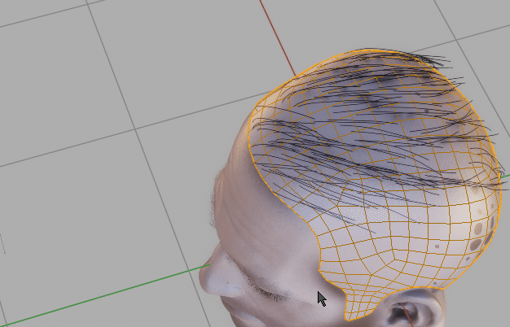
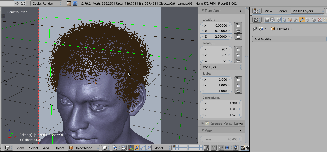

Convert¶
User can convert:
- Particle Hair to 'old' curves,
- 'old' Curves to Particle Hair,
- Hair System or any new hair Curve with Profile to Mesh (and back).
You can also generate:
Convert Hair To Mesh¶
Convert Hair To Mesh - Convert hair object to mesh. You will be able to restore original hair system with 'Restore Hair Object' operator. Used as last step, after you are done with the modeling in curve mode, before exporting hair to game. This operator ensures that curves UVs, vertex colors, sampled UV and Colors are properly transferred to mesh version of hair.
Finalize Hair¶
When exporting your character, with hair, you would have to:
- Convert curve Hair to mesh
- Join mesh hair with character body (it is destructive operation, so usually you would create copies each object before joining the duplicates)
- export merged-duplicated object
Finalize Hair is doing first two steps. Just select curve hair (or mesh hair), your character object and run 'Finalize hair' to get merged copy that is ready to export. You can remove exported duplicated object after that.
Properties: Join Instances - join result of 'Finalize Hair' into one object.
Particle Hairs to Curve¶
 Particle Hairs to Curve - generate curve ribbons from Particle hair. Â Align their tilt to head with 'Align Tilt' checkbox, and embed hair roots deeper into the scull using 'Embed Roots' parameter.
Particle Hairs From Curve¶
 Particle Hair from Curves (this can be used to convert zbrush fibermesh to blender Particle Hair system). Select curves and target mesh (that will receive Particle Hair) and use 'Particle Hair from Curves' to convert curves object to blenders Hair system.